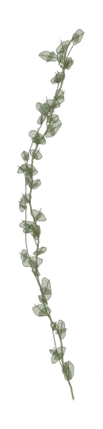
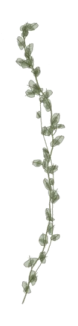
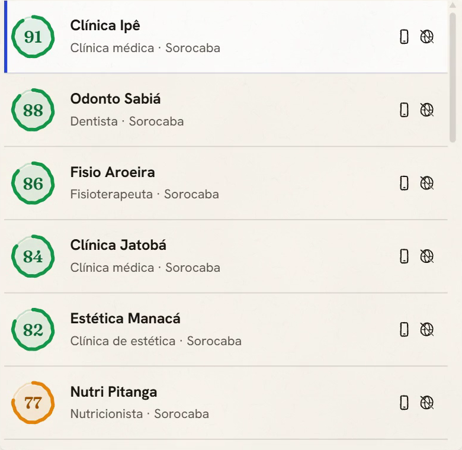
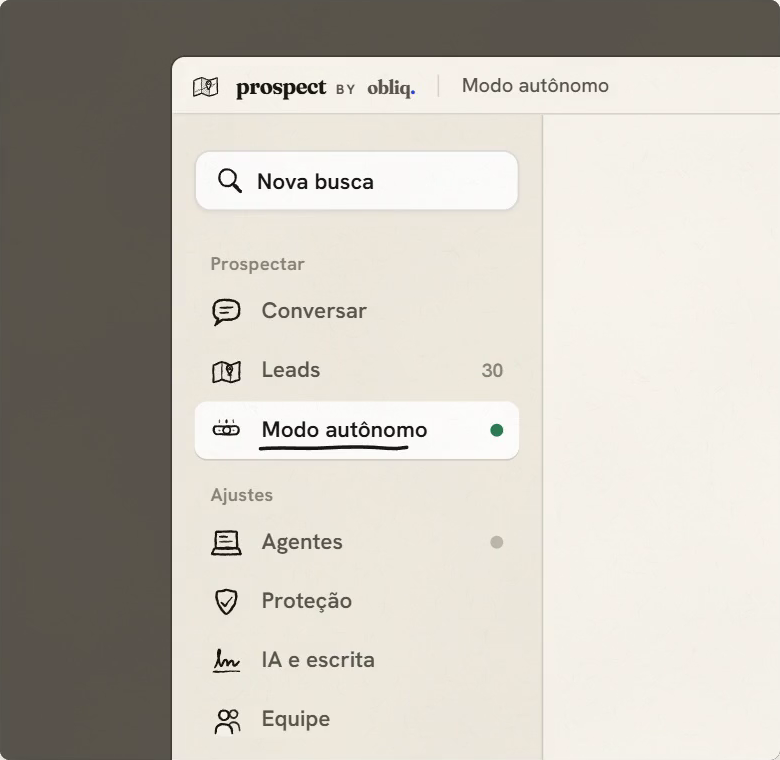

Controle total das suas vendas,
com o seu agente pessoal.
obliq
Testa agora, no plano grátis.
no PowerShell do Windows:
irm https://prospect.obliqstudios.com.br/instalar | iex
ou no navegador: prospect.obliqstudios.com.br


pra quem vende landing page.
e, em breve, micro-SaaS.
prospecta.
Você pede. Ele prospecta.
arrasta pro lado.Boa tarde, Marina. Eu busco, escrevo e preparo os envios; mandar, só com o seu ok. Por onde a gente começa?
prospect. dados de exemplo.
Você pede.
Chamei um ajudante pra busca em Sorocaba e liguei o autônomo.
prospect. dados de exemplo.
Busca as clínicas.
Liga o modo autônomo.

prospect. dados de exemplo.
Avalia cada uma.
Segue suas regras de venda.
prospect. dados de exemplo.
Escreve a abertura.
E deixa o gancho pronto pra resposta.
prospect no celular. dados de exemplo.
Envia uma por vez,
no ritmo de uma pessoa.

prospect. dados de exemplo.
Roda no seu computador.
E você acompanha pelo celular.
PS C:\> irm https://prospect.obliqstudios.com.br/instalar | iex prospect by obliq. Instalando o app. Leva uns 2 minutos, sem janela: acompanhe por aqui. Baixando a versão 0.1.7 (169 MB)... Conferido. Instalando....................... 46 s Pronto. Abrindo o Obliq Prospect: entre com o seu usuário e o agente liga sozinho. PS C:\> irm https://prospect.obliqstudios.com.br/terminal | iex prospect by obliq. Pronto. Abra um terminal novo e digite: prospect Na primeira vez ele pergunta o seu usuário e a senha. PS C:\>
prospect. as linhas de instalação.
Instalar é uma linha.
Uma pro app, outra pro terminal.
os planos
1 busca por dia, 30 mensagens da IA, envio manual.
Modo autônomo, com a IA da obliq incluída: até 1.000 leads por mês. Agentes e WhatsApps no seu PC, quantos quiser. Prefere a sua IA? Use o Codex ou a sua chave.
prospect. os planos.
A IA vem incluída.
Ou use a sua assinatura do Codex.
lançamento
pra sempre.
Para os 10 primeiros.
Vale para o plano No seu computador.
prospect. o preço de lançamento.
Os 10 primeiros travam o preço.
em breve
Autônomo, 24 horas, sem depender do seu computador ligado.
prospect. o que vem aí.
Em breve, um agente 24 horas.
O primeiro é grátis.
Controle total das suas vendas,
com o seu agente pessoal.
Testa agora, no plano grátis.
no PowerShell do Windows:
irm https://prospect.obliqstudios.com.br/instalar | iex
ou no navegador: prospect.obliqstudios.com.br